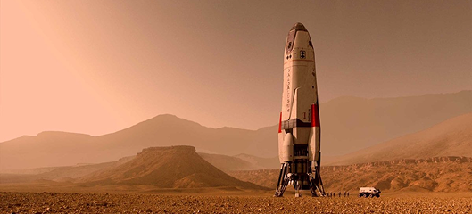
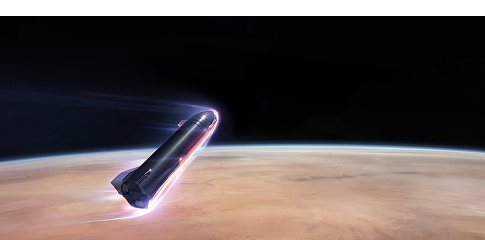
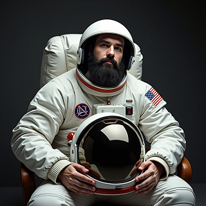
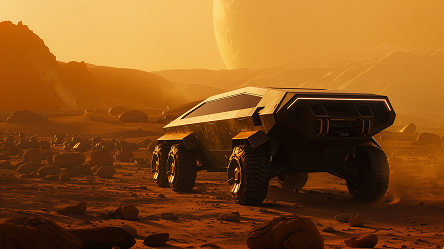

BRAVERSO: Missão D. Pedro I

imagens do pouso do foguete Santos Dummont, 2032.

imagens do pouso do foguete Santos Dummont, 2032.
BRAVERSO: Missão Dom Pedro I
Missão Dom Pedro I: conduzida pela BRAVERSO, representa um marco na história da exploração espacial brasileira. Pela primeira vez, um foguete 100% desenvolvido em território nacional ultrapassou os limites da órbita terrestre e consolidou o Brasil como um ator relevante no cenário aeroespacial global. Com o objetivo de demonstrar a capacidade tecnológica brasileira, expandir o conhecimento científico e estabelecer as bases para futuras missões interplanetárias, esta missão foi um sucesso absoluto .Aurora I: O Propulsor da Inovação
O foguete Aurora I, projetado e construído integralmente no Brasil, utilizou um avançado sistema de propulsão híbrida, combinando oxigênio líquido (LOX) e metano líquido (LCH₄), uma escolha estratégica por sua eficiência energética, menor impacto ambiental e possibilidade de reabastecimento em Marte. O metano, além de fornecer um empuxo altamente eficiente, pode ser sintetizado a partir do CO₂ marciano através do processo de Sabatier, uma abordagem essencial para futuras missões de colonização. A decolagem ocorreu em 21 de abril de 2025, diretamente do Centro de Lançamento de Alcântara, no Maranhão, aproveitando a posição privilegiada próxima à linha do equador, reduzindo o consumo de combustível e maximizando a carga útil.A Tripulação e a Jornada
A bordo do Aurora I, o astronauta Rubens José da Silva, ex-militar e descendente indígena, tornou-se o primeiro brasileiro a alcançar a órbita terrestre baixa a bordo de um veículo nacional. Durante os 10 dias de permanência no espaço, sua missão incluiu uma série de experimentos científicos focados em biotecnologia, crescimento de cristais proteicos em microgravidade, dinâmica de fluidos e simulação de processos industriais no vácuo do espaço. O retorno seguro da missão foi garantido pela cápsula Independência, um módulo reutilizável equipado com escudo térmico ablativo de carbono-carbono, projetado para suportar temperaturas superiores a 1.600°C durante a reentrada atmosférica. A amerrissagem controlada ocorreu no Oceano Atlântico, com resgate imediato pela equipe da BRAVERSO.Preparação para Marte: Um Novo Horizonte
Os dados coletados na Missão Dom Pedro I são fundamentais para a próxima etapa da BRAVERSO: a exploração tripulada de Marte. O planeta vermelho, de composição atmosférica 95% dióxido de carbono, 2,6% nitrogênio e 1,9% argônio, apresenta desafios únicos, mas também oportunidades estratégicas. A presença de percloratos no solo poderia ser explorada para a extração de oxigênio e produção de combustível in situ, enquanto depósitos subterrâneos de água congelada podem sustentar futuras colônias humanas. Além disso, a radiação cósmica marciana, cerca de 250 vezes mais intensa que na Terra, exige o desenvolvimento de novos materiais protetores. A BRAVERSO já estuda a utilização de compósitos de polietileno enriquecidos com hidrogênio, conhecidos por sua eficiência na absorção de partículas ionizantes.O Futuro da Exploração Espacial Brasileira
A Missão Dom Pedro I não apenas validou a capacidade do Brasil de construir e operar veículos espaciais próprios, mas também solidificou a ambição de expandir fronteiras para além da Terra. A BRAVERSO está comprometida em continuar essa jornada, capacitando novas gerações, investindo em pesquisa e desenvolvendo tecnologias que garantam a presença brasileira no espaço de forma independente e sustentável. O futuro da exploração interplanetária já começou, e o Brasil está pronto para liderar essa nova era de descobertas..

BRAGANÇA
primeiro astronauta brasileiro a sair da terra, 2030.

RMATP-V2
rover usado em marte para transporte, 2033.
QUERINO
segundo astronauta brasileiro a sair da terra, 2030.